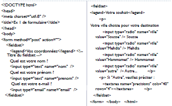
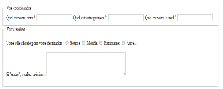
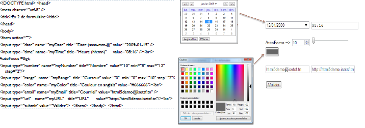
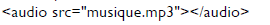
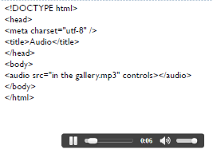

- Structure de base d'une page HTML5
- L'en-tête head et le corps body
- L'encodage (charset)
- Le titre principal de la page
- Les paragraphes
- La mise en forme du texte
- Les titres
- Les listes
- Les liens
- Insertion d'une image
- Les balises structurantes de HTML5
- Les balises de type block et inline
- Les balises universelles
- Les tableaux *Diviser un tableau *Fusionner un tableau
- Les objets de formulaire
- Les formats audio
- Les formats vidéo

Résultat:

Exemple2:

Les formats Audio
*MP3 : l'un des plus compatibles, tous les appareils savent le lire.
*AAC : utilisé majoritairement par Apple sur iTunes, c'est un format de bonne qualité. Les iPod, iPhone et autres iPad savent les lire sans problème.
*OGG : le format OggVorbis est très répandu dans le monde du logiciel libre, notamment sous Linux. Ce format a l'avantage d'être libre, c'est-à-dire qu'il n'est protégé par aucun brevet.
*WAV (format non compressé) : le fichier est très volumineux avec ce format.
- Insertion d'un élément audio
Exemple:

Les attributs de la balise :
*controls : Pour ajouter les boutons « Lecture », « Pause » et la barre de défilement.
*width : Pour modifier la largeur de l'outil de lecture audio.
*loop : La musique sera jouée en boucle.
autoplay : La musique sera jouée dès le chargement de la page.
*Preload : indique si la musique peut être préchargée dès le chargement de la page ou non. Cet attribut peut prendre les valeurs
*auto (par défaut) : Le navigateur décide s'il doit précharger toute la musique, uniquement les métadonnées ou rien du tout
*metadata : Charge uniquement les métadonnées (durée, etc.) *none : Pas de préchargement
Exemple:
